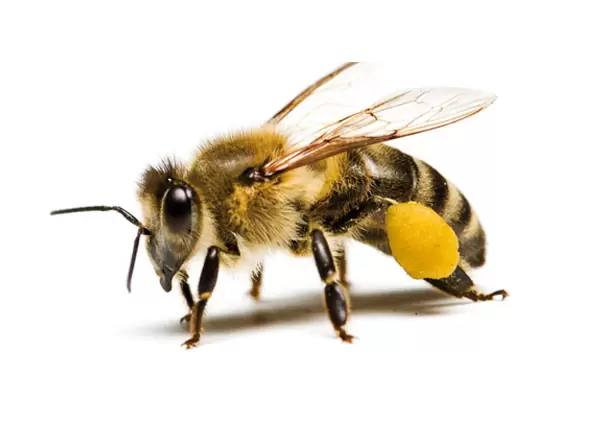
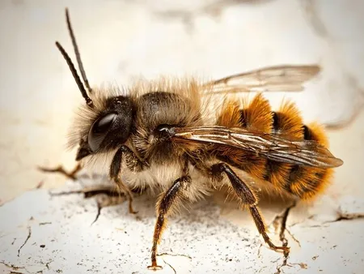
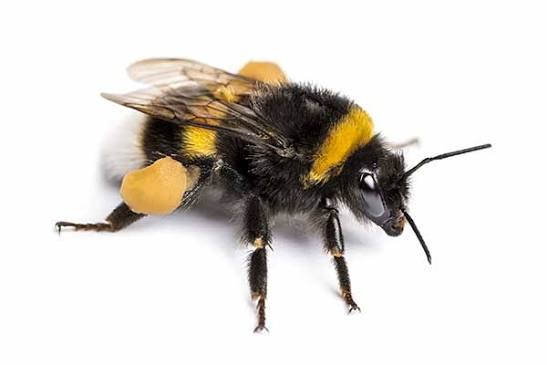

🐝 Pszczele ABC
Poznaj świat pszczół miodnych, samotnic i trzmieli
Poznaj świat pszczół miodnych, samotnic i trzmieli
W Polsce występuje ponad 470 gatunków pszczół, a pszczoła miodna to zaledwie jeden z nich. Zdecydowaną większość stanowią łagodne pszczoły samotnice oraz trzmiele, które nie tworzą dużych rojów i niezwykle skutecznie zapylają zarówno uprawy sadownicze, jak i dziką florę.

Gatunek społeczny
Żyje w zorganizowanych rodzinach liczących latem od 40 do 80 tysięcy osobników: jednej matki, kilkuset trutni i tysięcy robotnic. Porozumiewa się za pomocą słynnego tańca wywijanego, wskazując kierunek i odległość do pożytku.

Cisi bohaterowie (np. murarka)
Każda samica samodzielnie zakłada gniazdo w pustych łodygach roślin, glinianych skarpach lub w ziemi. Nie bronią zapasów miodu, dlatego są wyjątkowo łagodne i nie stanowią zagrożenia dla dzieci w przydomowym ogrodzie.

Zapylacze do zadań specjalnych
Dzięki gęstemu owłosieniu i zdolności do rozgrzewania mięśni lotnych trzmiele latają w niższych temperaturach niż pszczoły miodne. Stosują zapylanie wibracyjne, niezastąpione m.in. przy uprawie pomidorów i borówek.
Użyj przycisków poniżej, aby przeglądać polecane gatunki roślin zapewniające nektar i pyłek przez cały sezon: